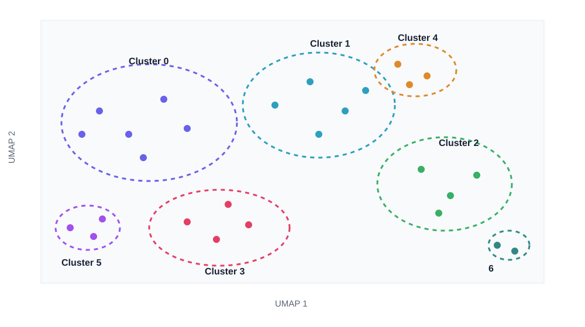

Single-cell analysis navigator
PBMC 3K Navigator
An interactive browser for exploring 2,700 human PBMCs, understanding cluster marker genes, and making evidence-based decisions about clusters 0, 1, and 6.
Explore the UMAP
The cluster view uses a different color for each Leiden cluster and a dotted boundary to make groups easy to compare. Click a cluster to see its top markers and quality metrics.

What the navigator does
Overview
Explore the UMAP, cluster sizes, top marker genes, and gene-expression patterns.
Cluster 0 vs 1
Review quality statistics, differential markers, and the evidence for keeping the clusters separate.
Cluster 6
Assess the 13-cell cluster, including its platelet-associated PPBP/PF4 signal.
Run locally
Clone the repository, install the dependencies, and start the FastAPI server:
git clone https://github.com/maryamnejati/DDLS-Course-week5.git
cd DDLS-Course-week5
python3 -m venv .venv
source .venv/bin/activate
pip install -r requirements.txt
uvicorn app:app --host 0.0.0.0 --port 8000Then open http://localhost:8000. Full instructions are in the README.